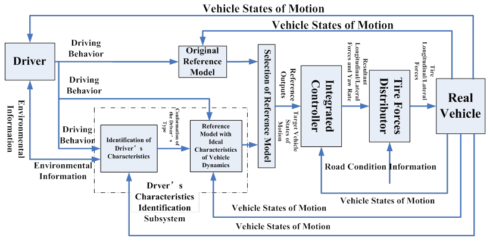
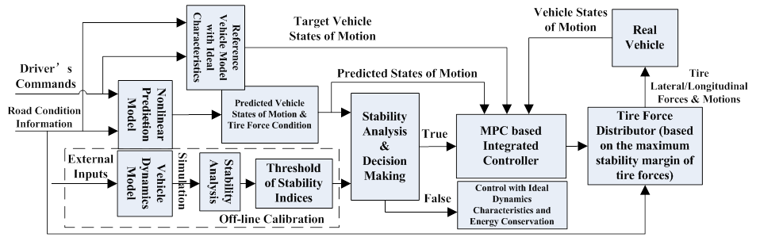
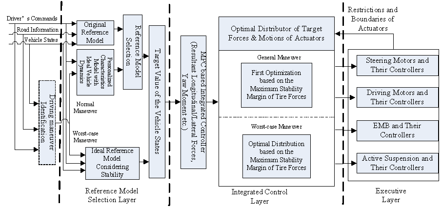

Integrated Control Method for a Full Drive-by-Wire Electric Vehicle Based on Driver’s Intention Recognition
Introduction
Almost every automaker in the world has been researching and promoting new energy vehicles under the pressure of resources, energy and environment. With rapid development of electric motors and communication technology, the electric vehicle with all its actuators using X-by-wire technology, namely a full drive-by-wire electric vehicle has gradually become a perfect platform for the research on the next-generation vehicle control. A full drive-by-wire electric vehicle must be steer-by-wire, drive-by-wire, brake-by-wire and it can achieve an ultimate goal of individual vehicle motion control whose four wheel driving and braking torques and four wheel steer angles can be controlled independently.
Theoretically, a full drive-by-wire electric vehicle can easily achieve ideal vehicle dynamic performance in plane motion, due to flexibility and high degrees of freedom of its control. It’s an ideal platform for the development of advanced vehicle control and for the design of next-generation vehicle dynamics characteristics. In order to realize the concept that “car adapts to people”, the process of driver’s intention recognition should be applied to the vehicle integrated control. Technical support and theoretical guidance in next-generation vehicle control will be provided by the research on achieving the ideal handling performance and optimal driving comfort and safety of the full drive-by-wire electric vehicle.
Research Topics
Ideal Vehicle Dynamics Control
A centralized controller will be implemented based on the model predictive control theory and the linear quadratic regulator will be utilized as the optimal-tire-force distributor. A driver’s characteristics identification subsystem is employed to identify the characteristics (types) of the driver by analyzing his/her control commands. Selected reference model is then matched with this (kind of) driver, which can reflect the ideal characteristics of vehicle dynamics. The central vehicle control unit integratedly controls the driving, braking, steering systems and makes the real vehicle motion track the outputs from the ideal vehicle dynamics reference model and eventually the concept that "car adapts to people" can be realized.

Figure 1: Block Diagram of the Ideal Vehicle Dynamics Control
Vehicle Stability Control
This project will establish an overall description of the performance indexes that assess the vehicle stability and determine their threshold values. A nonlinear prediction model which can describe the features of the stability of the full drive-by-wire electric vehicle will be built for the purpose of predicting the vehicle states of motion. If the stability indexes exceed the threshold values, the ideal dynamics characteristics control will be employed, otherwise the outputs of the ideal reference model will be the control objectives. The resultant forces and motion will be imported into the optimal distributor of tire forces and the maximum stability margin of tire forces should be guaranteed. The distributor computes target values of the component forces of each tire and sends them to the actuators.

Fig. 2: Block Diagram of the Vehicle Stability Control
Integration Control Methods
The integrated controller should be a MIMO system with a hierarchical structure with multiple layers that operate harmoniously. The characteristics of the ideal vehicle dynamics will be realized under general maneuvers meanwhile the ideal reference model will be set as the control objective under worst-case maneuvers to prevent the vehicle from instability. The control objective of tire-force distributor will be the optimal stability margin of tire forces.

Fig. 3: Overall System Block Diagram
Researchers
Prof. Tomizuka, Masayoshi |
|
Acknowledgements
This project is a collaboration between the University of California, Berkeley and Jilin University in P.R. China and supported by State Key Laboratory of Automotive Simulation and Control, Jilin University.